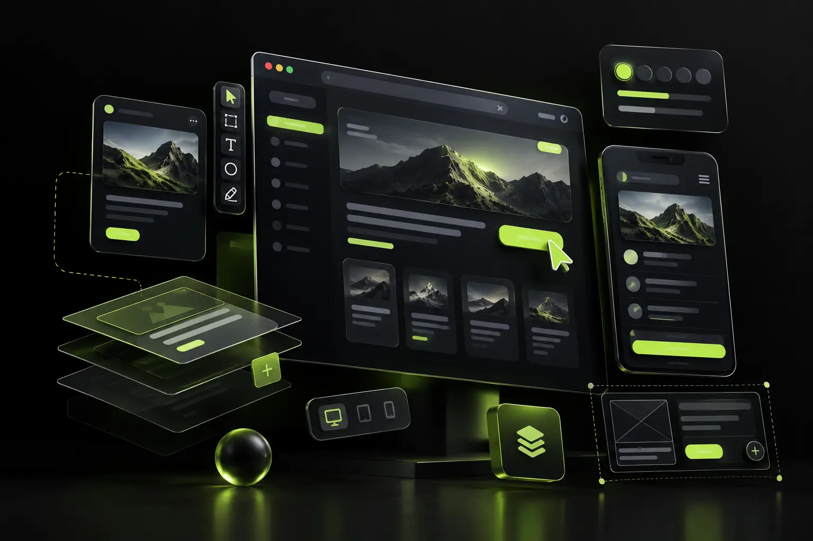

SAMSARATECH / UI/UX DESIGN
Clear experiences
with purpose.
We turn complex products into simple, intuitive experiences that help users understand, trust and use your digital product.

Design that makes sense
Research, user flows, wireframes, visual systems and prototypes come together in a design process built around clarity and conversion.
Improve your experience ->